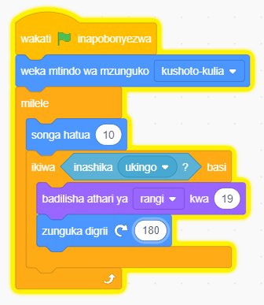

Unda programu itakayosogeza kihusika kutoka kulia kwenda kushoto.
Ikiwa kitagusa ukingo wa jukwaa, kitabadilisha rangi, kitageuka digrii 180, kisha kitaendelea kusogea.
-
1. Bofya bloku la Matukio kisha chagua bloku ya wakati bendera ya kijani inapobonyezwa.
-
2.
Bofya bloku la Mwendo na kisha chagua bloku ya weka mtindo wa mzunguko ( ). Chagua kushoto – kulia.
-
3.
Bofya bloku la Kidhibiti kisha chagua bloku la milele. Ndani ya bloku la milele ongeza bloku ya songa hatua 10 na bloku ya ikiwa ( ) basi.
-
4. Chagua bloku la inashika ukingo? kutoka kwenye bloku la Hisi kisha liweke ndani ya sehemu ya sharti ya bloku la ikiwa ( ) basi katika msimbo.
-
5. Ongeza bloku la badilisha athari ya rangi kwa (19) na zunguka digrii (180) ndani ya bloku la ikiwa ( ) basi.
-
6.
Bofya bendera ya kijani kuanzisha programu. Angalia au sikiliza maelezo ya Kielelezo namba 11.

Kielelezo namba 11: Kutumia muundo wa kudhibiti maamuzi